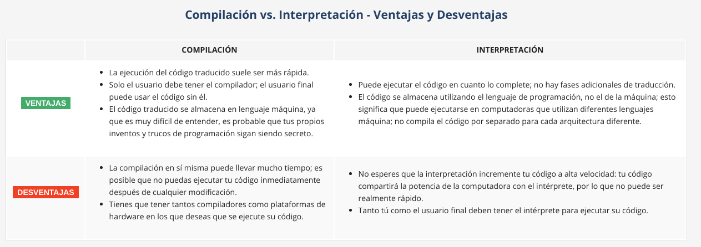

Modulo 1
Un programa hace que una computadora sea utilizable. Sin un programa, una computadora, incluso la más poderosa, no es más que un objeto.
Lenguajes naturales vs. lenguajes de programacion
Cada lenguaje independientemente de si es lenguaje maquina o natural, consta de los siguientes elementos:
- ALFABETO
Un conjunto de símbolos utilizados para formar palabras de un determinado idioma (por ejemplo, el alfabeto latino para el inglés, el alfabeto cirílico para el ruso, el kanji para el japonés, etc.).
- LÉXICO
(También conocido como diccionario) un conjunto de palabras que el idioma ofrece a sus usuarios (por ejemplo, la palabra "computadora" proviene del diccionario en inglés, mientras que "abcde" no; la palabra "chat" está presente en los diccionarios de inglés y francés, pero sus significados son diferentes.
- SINTAXIS
Un conjunto de reglas (formales o informales, escritas o interpretadas intuitivamente) utilizadas para precisar si una determinada cadena de palabras forma una oración válida (por ejemplo, "Soy una serpiente" es una frase sintácticamente correcta, mientras que "Yo serpiente soy una" no lo es).
- SEMÁNTICA
Un conjunto de reglas que determinan si una frase tiene sentido (por ejemplo, "Me comí una dona" tiene sentido, pero "Una dona me comió" no lo tiene).
La IL(Instruction List) es, de hecho, el alfabeto de un lenguaje máquina. Este es el conjunto de símbolos más simple y principal que podemos usar para dar comandos a una computadora. Es la lengua materna de la computadora.
El lenguaje en el que los humanos puedan escribir sus programas y un lenguaje que las computadoras puedan usar para ejecutar los programas, que es mucho más complejo que el lenguaje máquina y más sencillo que el lenguaje natural, son a menudo llamados lenguajes de programación de alto nivel. Son algo similares a los naturales en que usan símbolos, palabras y convenciones legibles para los humanos. Estos lenguajes permiten a los humanos expresar comandos a computadoras que son mucho más complejas que las ofrecidas por las IL.
Un programa escrito en un lenguaje de programación de alto nivel se llama código fuente (en contraste con el código de máquina ejecutado por las computadoras). Del mismo modo, el archivo que contiene el código fuente se llama archivo fuente.
Compilacion vs. Interpretacion
La programación de computadora es el acto de establecer una secuencia de instrucciones con la cual se causará el efecto deseado. El efecto podría ser diferente en cada caso específico: depende de la imaginación, el conocimiento y la experiencia del programador.
Por supuesto, tal composición tiene que ser correcta en muchos sentidos, tales como:
Alfabéticamente: Un programa debe escribirse en una secuencia de comandos reconocible, por ejemplo, el Romano, Cirílico, etc.
Léxicamente: Cada lenguaje de programación tiene su diccionario y necesitas dominarlo; afortunadamente, es mucho más simple y más pequeño que el diccionario de cualquier lenguaje natural.
Sintácticamente: Cada idioma tiene sus reglas y deben ser obedecidas.
Semánticamente: El programa tiene que tener sentido.
Alfabéticamente: Un programa debe escribirse en una secuencia de comandos reconocible, por ejemplo, el Romano, Cirílico, etc.
Léxicamente: Cada lenguaje de programación tiene su diccionario y necesitas dominarlo; afortunadamente, es mucho más simple y más pequeño que el diccionario de cualquier lenguaje natural.
Sintácticamente: Cada idioma tiene sus reglas y deben ser obedecidas.
Semánticamente: El programa tiene que tener sentido.
Hay dos formas diferentes de transformar un programa de un lenguaje de programación de alto nivel a un lenguaje de máquina:
COMPILACIÓN - El programa fuente se traduce una vez (sin embargo, esta ley debe repetirse cada vez que se modifique el código fuente) obteniendo un archivo que contiene el código de la máquina; ahora puedes distribuir el archivo en todo el mundo; el programa que realiza esta traducción se llama compilador o traductor.
INTERPRETACIÓN - Tú (o cualquier usuario del código) puedes traducir el programa fuente cada vez que se ejecute; el programa que realiza este tipo de transformación se denomina intérprete, ya que interpreta el código cada vez que está destinado a ejecutarse; también significa que no puede distribuir el código fuente tal como está, porque el usuario final también necesita que el intérprete lo ejecute.
Debido a algunas razones muy fundamentales, un lenguaje de programación de alto nivel particular está diseñado para caer en una de estas dos categorías.
Hay muy pocos idiomas que se pueden compilar e interpretar. Por lo general, un lenguaje de programación se proyecta con este factor en la mente de sus constructores: ¿Se compilará o interpretará?
¿Que hace realmente el interprete?
El intérprete lee el código fuente de una manera que es común en la cultura occidental: de arriba hacía abajo y de izquierda a derecha. Hay algunas excepciones: se cubrirán más adelante en el curso.
En primer lugar, el intérprete verifica si todas las líneas subsiguientes son correctas (utilizando los cuatro aspectos tratados anteriormente).
Si el compilador encuentra un error, termina su trabajo inmediatamente. El único resultado en este caso es un mensaje de error. El intérprete le informará dónde se encuentra el error y qué lo causó. Sin embargo, estos mensajes pueden ser engañosos, ya que el intérprete no puede seguir tus intenciones exactas y puede detectar errores a cierta distancia de tus causas reales.
Si la línea se ve bien, el intérprete intenta ejecutarla (nota: cada línea generalmente se ejecuta por separado, por lo que el trío "Lectura - Verificación - Ejecución", pueden repetirse muchas veces, más veces que el número real de líneas en el archivo fuente, como algunas partes del código pueden ejecutarse más de una vez).
También es posible que una parte significativa del código se ejecute con éxito antes de que el intérprete encuentre un error. Este es el comportamiento normal en este modelo de ejecución.
Python es un lenguaje interpretado. Esto significa que hereda todas las ventajas y desventajas descritas. Por supuesto, agrega algunas de sus características únicas a ambos conjuntos.

Debido a razones históricas, los lenguajes diseñados para ser utilizados en la manera de interpretación a menudo se llaman lenguajes de programación, mientras que los programas fuente codificados que los usan se llaman scripts.
¿Que es Python?
Python es un lenguaje de programación de alto nivel, interpretado, orientado a objetos y de uso generalizado con semántica dinámica, que se utiliza para la programación de propósito general. Python fue creado por Guido van Rossum.
Objetivos de Python
- Un lenguaje fácil e intuitivo tan poderoso como los de los principales competidores.
- De código abierto, para que cualquiera pueda contribuir a su desarrollo.
- El código que es tan comprensible como el inglés simple.
- Adecuado para tareas cotidianas, permitiendo tiempos de desarrollo cortos.
Python es :
- Facil de aprender
- Facil de enseñar
- Facil de utilizar
- Facil de comprender
- Facil de obtener
Areas en las que python es ausente: Programacion de bajo nivel y aplicaciones para dispositivos moviles.
Compentencias directas de python: Perl y Ruby
Compentencias directas de python: Perl y Ruby
Hay mas de un Python
En primer lugar, están los Pythons que mantienen las personas reunidas en torno a PSF (Python Software Foundation), una comunidad que tiene como objetivo desarrollar, mejorar, expandir y popularizar Python y su entorno. El presidente del PSF es el propio Guido van Rossum, y por esta razón, estos Pythons se llaman canónicos. También se consideran Pythons de referencia, ya que cualquier otra implementación del lenguaje debe seguir todos los estándares establecidos por el PSF.
CPYTHON
Guido van Rossum utilizó el lenguaje de programación "C" para implementar la primera versión de su lenguaje y esta decisión aún está vigente. Todos los Pythons que vienen del PSF están escritos en el lenguaje "C". Esta es la razón por la que la implementación de PSF a menudo se denomina CPython. Este es el Python más influyente entre todos los Pythons del mundo.
Guido van Rossum utilizó el lenguaje de programación "C" para implementar la primera versión de su lenguaje y esta decisión aún está vigente. Todos los Pythons que vienen del PSF están escritos en el lenguaje "C". Esta es la razón por la que la implementación de PSF a menudo se denomina CPython. Este es el Python más influyente entre todos los Pythons del mundo.
CYTHON
Cython es una de las posibles soluciones al rasgo de Python más doloroso: la falta de eficiencia. Los cálculos matemáticos grandes y complejos pueden ser fácilmente codificados en Python (mucho más fácil que en "C" o en cualquier otro lenguaje tradicional), pero la ejecución del código resultante puede requerir mucho tiempo. Esto es lo que pretende hacer Cython: traducir automáticamente el código de Python (limpio y claro, pero no demasiado rápido) al código "C" (complicado y hablador, pero ágil).
Cython es una de las posibles soluciones al rasgo de Python más doloroso: la falta de eficiencia. Los cálculos matemáticos grandes y complejos pueden ser fácilmente codificados en Python (mucho más fácil que en "C" o en cualquier otro lenguaje tradicional), pero la ejecución del código resultante puede requerir mucho tiempo. Esto es lo que pretende hacer Cython: traducir automáticamente el código de Python (limpio y claro, pero no demasiado rápido) al código "C" (complicado y hablador, pero ágil).
JYTHON
"J" es para "Java". Imagina un Python escrito en Java en lugar de C. Esto es útil, por ejemplo, si desarrollas sistemas grandes y complejos escritos completamente en Java y deseas agregarles cierta flexibilidad de Python. Jython puede comunicarse con la infraestructura Java existente de manera más efectiva. Es por esto que algunos proyectos lo encuentran útil y necesario.
"J" es para "Java". Imagina un Python escrito en Java en lugar de C. Esto es útil, por ejemplo, si desarrollas sistemas grandes y complejos escritos completamente en Java y deseas agregarles cierta flexibilidad de Python. Jython puede comunicarse con la infraestructura Java existente de manera más efectiva. Es por esto que algunos proyectos lo encuentran útil y necesario.
PYPY y RPYTHON
Representa un entorno de Python escrito en un lenguaje similar a Python llamado RPython (Restricted Python). En realidad es un subconjunto de Python. El código fuente de PyPy no se ejecuta de manera interpretativa, sino que se traduce al lenguaje de programación C y luego se ejecuta por separado.
Representa un entorno de Python escrito en un lenguaje similar a Python llamado RPython (Restricted Python). En realidad es un subconjunto de Python. El código fuente de PyPy no se ejecuta de manera interpretativa, sino que se traduce al lenguaje de programación C y luego se ejecuta por separado.
Python trae consigo un IDLE es un acrónimo de: Integrated Development and Learning Environment (Desarrollo Integrado y Entorno de Aprendizaje).
Backlinks: Python Essentials